指数有没有除法呢？指数的除法又会对应怎样的运算呢？要想弄明白这个问题，首先我们得研究一下乘方的逆运算．
众所周知，加法的逆运算是减法，乘法的逆运算是除法．那么乘方有逆运算吗？乘方表示的是几个底数相乘，那么连续相除是它的逆运算吗？所谓逆运算就是根据结果反推过程．那么乘方的过程是什么呢？比如a 的n 次方，它的过程就是n 个a 相乘，结果当然就是它们的乘积了．如果我们已经知道了乘方的结果和乘方的次数，能不能反推它的底数呢？比如10的3次方等于1000，这个过程属于乘方运算．但如果我问你，谁的三次方等于1000呢？这是不是就是根据乘方的结果，反推底数的过程呢？
是的，根据幂和指数反推底数的运算，就是乘方的逆运算，叫作开方，开方的结果又叫作方根．因为指数不同，所以在开方的时候，还需要指明它的指数．比如求一个数字是哪个未知数的平方，我们就把这个结果，叫作平方根，或者二次方根．如果是求一个数字是哪个未知数的三次方呢？我们就把这个结果，叫作三次方根，或者立方根．当然，还有四次方根、五次方根等，由于开方和乘方互为逆运算，因此根式的次数和乘方的指数是一一对应的．开方是初中阶段要学的最后一种运算法则，从此我们在加减乘除四则运算的基础上又增加了乘方开方的运算，六种运算的关系如图10－1所示：
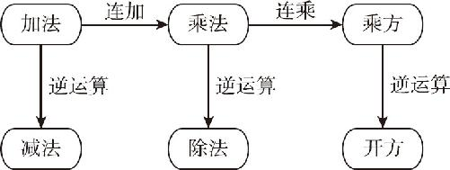
图10－1
那么，求一个数的几次方根用代数算式应该怎么表示呢？一般我们会通过用根号来表示开方的运算，这个根号底下的数字表示要开方的数字，根号左上角的数字，表示要开方的次数．因为乘方的指数是写在右上角的，所以开方运算时，指数就只能写在左上角了，比如
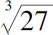
，它就表示求27是哪个数的3次方，结果当然就是3了．不过，我们还有一个习惯，那就是：当指数是2的时候，可以忽略不写，比如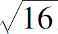
表示的就是求16的二次方根．要注意的是，16的平方根是有两个的， 所表示的只是正的那个平方根，它又被称作算术平方根．那么负的那个平方根怎么办呢？我们只能通过在前面增加正负号来表示，比如：16的平方根是多少？我们必须说，16的平方根等于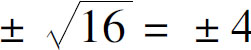
．相反，如果题目本身就是写的 ，我们可不能写±4，而只能写4．因为这个题目根本没问我们16的平方根是多少，问的只是16的算术平方根等于多少，所以只要写4，如果写成±4就算画蛇添足了．明白了这个道理，我们分析一个例题：
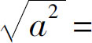
？这个题目让我们求的是a 2 的算术平方根是多少？那我们就要知道根号里面的部分是谁的平方，a 2 当然就是a 的平方了，所以这个结果就是a ，对不对呢？不对，因为算术平方根必须是正数或者0，而我们根本就不清楚a 是正数还是负数或是零．如果这个a 是小于0的呢？那不就得到负数了吗？所以必须要分情况讨论，要保证它的结果是非负数，开根号的结果就只能是a 的绝对值｜a ｜，因此当a ≥0的时候，结果是a ；当a ＜0呢，结果就是－a ，即
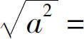
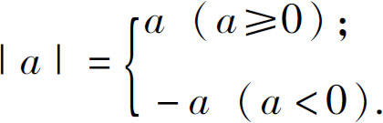
接下来，我们再处理一个问题：
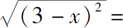
？刚才我们讨论过了，一个东西平方再开根号，必须开出一个正的根来．如果是正数，开出来就是它自己；如果是负数呢，就是自己的相反数．也就是说，如果3－x ≥0，开出来的结果就是3－x ，如果3－x ＜0呢，开出来就是－（3－x ），也就是x －3．但是，这个情况我们不能这么区分，必须要对3－x ≥0进一步化简，确定x 的取值范围，把3－x ≥0这个不等式解出来，得到x ≤3，就是说x ≤3的时候，开方出来的结果是3－x ．相反，如果x ＞3呢？开出来就是x －3，即
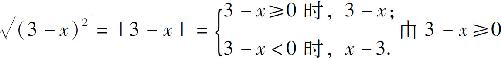
得，x ≤3，由3－x ＜0得，x ＞3，即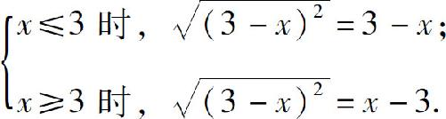
那么，开方运算和指数有什么关系呢？乘方要用指数表示，但是开方用的是根号表示，看起来和指数好像没什么关系，但实际上开方运算还有一种指数表示法：那就是用一个数的n 分之一次方，表示开n 次方根，比如：
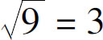
，我们也可以表示为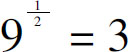
同理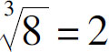
，也可以表示为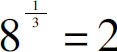
．为什么会这么规定呢？这个规则可以由幂的乘方运算推演出来，我们知道（a m ） n ＝a m n ，我们假设m 、n 互为倒数，即
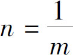
，原始就可以变为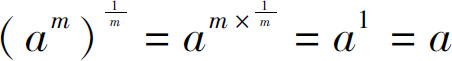
，我们再假设a m ＝b ，因此就有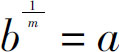
，又因为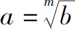
，所以就得到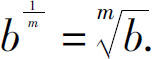
那么，如果是
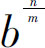
，又该等于多少呢？我们知道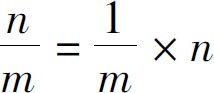
，所以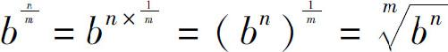
，由于乘法交换律，也可以认为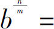
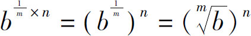
．接下来，我们分析这样一个问题：
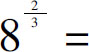
？根据上述规律，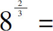
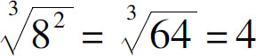
，当然，也可以认为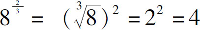
．通过上述讨论，我们终于凑齐了指数的加减乘除运算，以下表10－1是指数运算和乘方运算的对照表：
表10－1
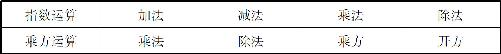
到目前为止，我们就把乘方开方的基本运算都搞清楚了，但是好像有个重要的事情被我们遗忘了！我们都知道
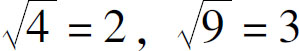
，那么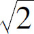
的结果等于多少呢？这个问题可不能随便问，这又是一个杀人的数字，世界上第一提出这个问题的人，可被人扔到河里淹死了，这又是怎么回事儿呢？